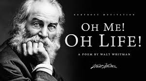

"O Me! O life!", by Walt Whitman

O Me! O life! of the questions of these recurring,
Of the endless trains of the faithless, of cities fill’d with the foolish,
Of myself forever reproaching myself, (for who more foolish than I, and who more faithless?)
Of eyes that vainly crave the light, of the objects mean, of the struggle ever renew’d,
Of the poor results of all, of the plodding and sordid crowds I see around me,
Of the empty and useless years of the rest, with the rest me intertwined,
The question, O me! so sad, recurring—What good amid these, O me, O life?
One of Whitman’s shortest and most celebrated poems,“O Me! O Life!” highlights the daily struggle that is life. After his early lamentations, the poet concludes that the meaning of life lies in life itself — that we are present, alive, and can contribute our own verse to life. In Whitman’s case this is literally a verse, but metaphorically this refers to whatever you bring to the table.